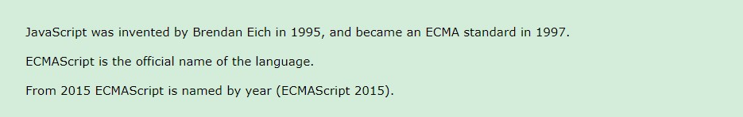
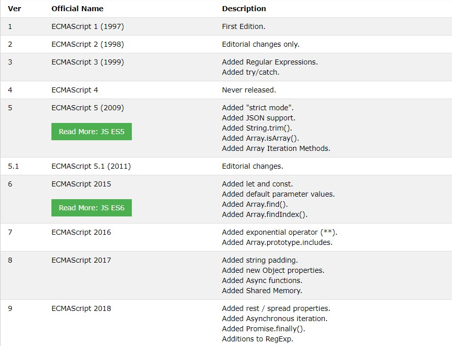
* JavaScript variables are containers for storing data values.
* Variable - Numbers are not allowed as the first character.
* Javascript variables does not start with number. Other than we can use (aBC, _abc, ABC, $abc, $100)
* All JavaScript variables must be identified with unique names. These unique names are called identifiers.
*In JavaScript, objects and functions are also variables.
Scope determines the accessibility of variables, objects, and functions from different parts of the code.
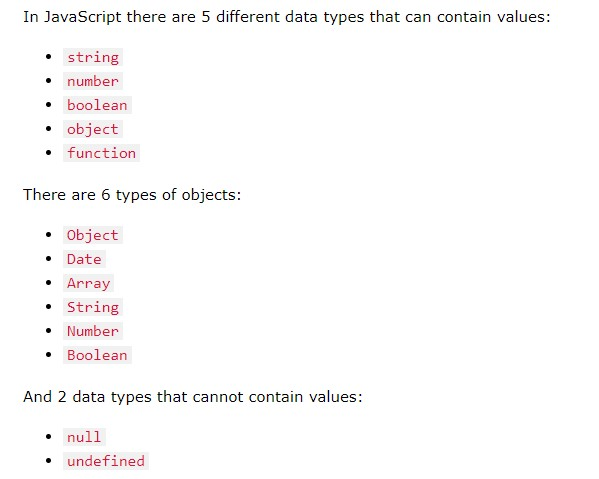
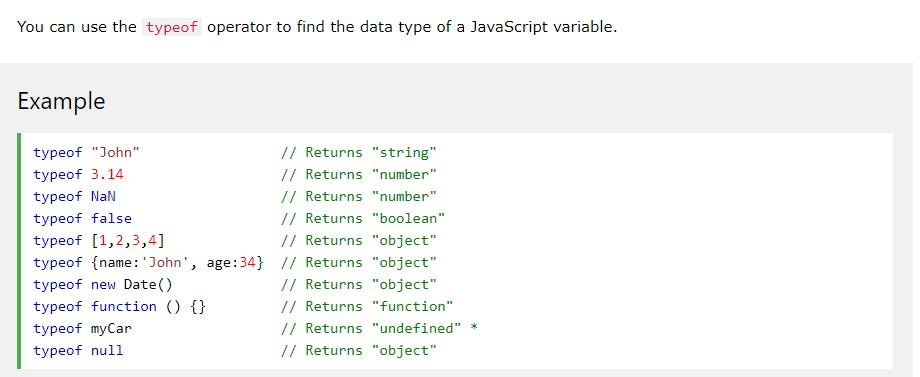
You cannot use typeof to determine if a JavaScript object is an array (or a date).
* If you put a number in quotes, the rest of the numbers will be treated as strings, and concatenated.
* When used on strings, the + operator is called the concatenation operator..
* = assign, == compares it isequal, === compare its equal both value and the type are same.
* The exponentiation operator (**) and Math.pow(x,y) are same.
* undefined and null are equal in value but different in type:.
typeof undefined -> undefined
typeof null -> object
null === undefined -> false
null == undefined -> true
* A primitive data value is a single simple data value with no additional properties and methods. The typeof operator can return one of these primitive types:.
* The typeof operator can return one of two complex types:.
* The typeof operator returns "object" for objects, arrays, and null.
* The typeof operator does not return "object" for functions.
typeof {name:'John', age:34} // Returns "object"
typeof [1,2,3,4] // Returns "object" (not "array", see note below)
typeof null // Returns "object"
typeof function myFunc(){} // Returns "function"
* The typeof operator returns "object" for arrays because in JavaScript arrays are objects.
Array.isArray(array_name)
* Will check it isArray or not and return true or false
The problem with this solution is that ECMAScript 5 is not supported in older browsers.
* Since local variables are only recognized inside their functions, variables with the same name can be used in different functions.
* Local variables are created when a function starts, and deleted when the function is completed.
* JavaScript objects are containers for named values called properties or methods.
* var objectName = {propertyName1: propertyValue1, propertyName2: propertyValue2, propertyName3: propertyValue3}. You can access like
objectName.propertName1 or objectName.['propertName1']
* Objects can also have methods.
* Methods are actions that can be performed on objects.
* Methods are stored in properties as function definitions.
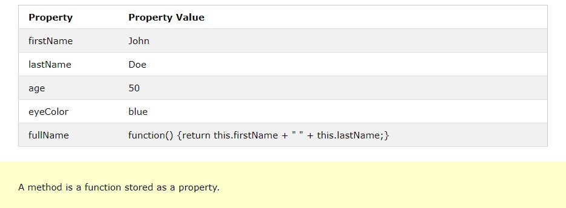
* When using the === operator, equal strings are not equal, because the === operator expects equality in both type and value Or even worse. Objects cannot be compared:
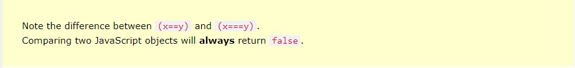
* Both indexOf(), and lastIndexOf() return -1 if the text is not found.
* There are 3 methods for extracting a part of a string:
* A string can be converted to an array with the split() method:
* JavaScript will try to convert strings to numbers in all numeric operations
There are 3 JavaScript methods that can be used to convert variables to numbers:
* These methods are not number methods, but global JavaScript methods.
* JavaScript variables can be objects. Arrays are special kinds of objects.
* Because of this, you can have variables of different types in the same Array.
* You can have objects in an Array. You can have functions in an Array. You can have arrays in an Array:
myArray[0] = Date.now;
myArray[1] = myFunction;
myArray[2] = myCars;
* The real strength of JavaScript arrays are the built-in array properties and methods:
var x = cars.length; // The length property returns the number of elements
var y = cars.sort(); // The sort() method sorts arrays
* Accesing last element of the array
var last = fruits[fruits.length - 1];
* The best way to loop through an array is using a standard for loop:
* The easiest way to add a new element to an array is using the push() method:
var fruits = ["Banana", "Orange", "Apple", "Mango"];
fruits.push("Lemon"); // adds a new element (Lemon) to fruits
* New element can also be added to an array using the length property:
var fruits = ["Banana", "Orange", "Apple", "Mango"];
fruits[fruits.length] = "Lemon"; // adds a new element (Lemon) to fruits
* Adding elements with high indexes can create undefined "holes" in an array:
var fruits, text2, fLen, i;
fruits = ["Banana", "Orange", "Apple", "Mango"];
fruits[15] = "Lemon";
fLen = fruits.length;
text2 = "";
";
for (i = 0; i < fLen; i++) {
text2 += "
}
text2 += "
document.getElementById("demo2").innerHTML = text2;
* Many programming languages support arrays with named indexes.
* Arrays with named indexes are called associative arrays (or hashes).
* JavaScript does not support arrays with named indexes.
* In JavaScript, arrays always use numbered indexes.
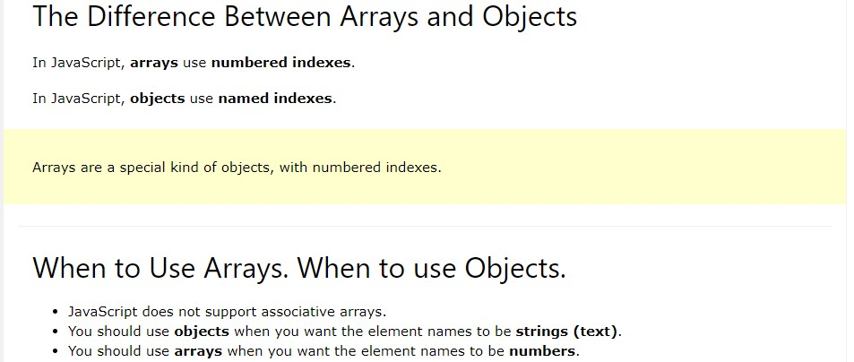
* The join() method also joins all array elements into a string.
fruits.toString()
Banana,Orange,Apple,Mango
* It behaves just like toString(), but in addition you can specify the separator:
fruits.join(" * ")
Banana * Orange * Apple * Mango
* Popping items out of an array, or pushing items into an array.
* The pop() method removes the last element from an array.
* The pop() method returns the value that was "popped out".
* The push() method adds a new element to an array (at the end).
* The push() method returns the new array length:
var fruits = ["Banana", "Orange", "Apple", "Mango"];
fruits.pop(); // Removes the last element ("Mango") from fruits and returns the value mango
var fruits = ["Banana", "Orange", "Apple", "Mango"];
fruits.push(); // Adds a new element ("Kiwi") to fruits and returns the length of the array
* Shifting is equivalent to popping, working on the first element instead of the last.
The shift() method removes the first array element and "shifts" all other elements to a lower index.
The shift() method returns the string that was "shifted out".
* The unshift() method adds a new element to an array (at the beginning), and "unshifts" older
elements.
The unshift() method returns the new array length.
* Since JavaScript arrays are objects, elements can be deleted by using the JavaScript operator delete.
Using delete may leave undefined holes in the array. Use pop() or shift() instead.
* The first parameter (2) defines the position where new elements should be added (spliced in).
* The second parameter (0) defines how many elements should be removed.
* The rest of the parameters ("Lemon" , "Kiwi") define the new elements to be added.
* The splice() method returns an array with the deleted items
var fruits = ["Banana", "Orange", "Apple", "Mango"];
fruits.splice(2, 2, "Lemon", "Kiwi");
// delete from the position 2 and delete 2 items. And will add the two items lemon and kiwi. Then return new array.
* Splice() is used to add or remove element by giving parameters.
With clever parameter setting, you can use splice() to remove elements without leaving "holes" in the array
var fruits = ["Banana", "Orange", "Apple", "Mango"];
fruits.splice(2, 0, "Lemon", "Kiwi");
// first parameter (2) is starting parameter,
//second parameter (0) is to delete the number of records,
//third (Lemon) and 4th (Kiwi) are the parameteres to adding records.
fruits.splice(2, 2, "Lemon", "Kiwi");
// first parameter (2) is starting parameter,
//second parameter (2) is to delete the number of records.
fruits.splice(0, 1);
// first parameter (0) is starting parameter,
//second parameter (1) is to delete the number of records.
* The concat() method creates a new array by merging (concatenating) existing arrays.
var myGirls = ["Cecilie", "Lone"];
var myBoys = ["Emil", "Tobias", "Linus"];
var myChildren = myGirls.concat(myBoys); // Concatenates (joins) myGirls and myBoys
* The concat() method can take any number of array arguments
var arr1 = ["Cecilie", "Lone"];
var arr2 = ["Emil", "Tobias", "Linus"];
var arr3 = ["Robin", "Morgan"];
var myChildren = arr1.concat(arr2, arr3); // Concatenates arr1 with arr2 and arr3
* The concat() method can also merge string values to arrays:
var arr1 = ["Emil", "Tobias", "Linus"];
var myChildren = arr1.concat("Peter");
Emil,Tobias,Linus,Peter
* The slice() method slices out a piece of an array into a new array.
* This example slices out a part of an array starting from array element 3 ("Apple")
var fruits = ["Banana", "Orange", "Lemon", "Apple", "Mango"];
var citrus = fruits.slice(3);
Apple,Mango
* When the slice() method is given two arguments, it selects array elements from the start argument, and up to (but not included) the end argument
var fruits = ["Banana", "Orange", "Lemon", "Apple", "Mango"];
var citrus = fruits.slice(1,3);
Orange,Lemon
* If the end argument is omitted, like in the first examples, the slice() method slices out the rest of the array.
var fruits = ["Banana", "Orange", "Lemon", "Apple", "Mango"];
var citrus = fruits.slice(2);
Lemon,Apple,Mango
* JavaScript automatically converts an array to a comma separated string when a primitive value is expected.
* This is always the case when you try to output an array.
* These two examples will produce the same result:
var fruits = ["Banana", "Orange", "Apple", "Mango"];
fruits.toString();
fruits;
Banana,Orange,Apple,Mango
var fruits = ["Banana", "Orange", "Apple", "Mango"];
fruits.sort(); // Sorts the elements of fruits
fruits.reverse(); // Then reverse the order of the elements
* The sort() method will produce incorrect result when sorting numbers. You can fix this by providing a compare function.
var points = [40, 100, 1, 5, 25, 10];
points.sort(function(a, b){return a - b});
1,5,10,25,40,100
//Use the same trick to sort an array descending
points.sort(function(a, b){return a - b});
100,40,25,10,5,1
* Array iteration methods operate on every array item.
* Array.forEach() -> The forEach() method calls a function (a callback function) once for each array element.
* Note that the function takes 3 arguments
var txt = "";
var numbers = [45, 4, 9, 16, 25];
numbers.forEach(myFunction);
function myFunction(value, index, array) {
txt = txt + value;
}
* The map() method creates a new array by performing a function on each array element.
* The map() method does not execute the function for array elements without values.
* The map() method does not change the original array.
* This example multiplies each array value by 2:
var numbers1 = [45, 4, 9, 16, 25];
var numbers2 = numbers1.map(myFunction);
document.getElementById("demo").innerHTML = numbers2;
function myFunction(value, index, array) {
return value * 2;
}
* Array.filter() -> The filter() method creates a new array with array elements that passes a test.
* Array.reduce() -> The reduce() method runs a function on each array element to produce (reduce it to) a single value.
* Array.reduceRight() -> The reduceRight() method runs a function on each array element to produce (reduce it to) a single value.
* Array.every() -> The every() method check if all array values pass a test.
* Array.some() -> The some() method check if some array values pass a test.
* Array.some() -> The indexOf() method searches an array for an element value and returns its position.
* Array.lastIndexOf() - > Array.lastIndexOf() is the same as Array.indexOf(), but returns the position of the last occurrence of the specified element.
* Array.find() -> The find() method returns the value of the first array element that passes a test function.
* Array.findIndex() -> The findIndex() method returns the index of the first array element that passes a test function.
* Date objects are static. The computer time is ticking, but date objects are not.
* 7 numbers specify year, month, day, hour, minute, second, and millisecond (in that order)
* 6 numbers specify year, month, day, hour, minute, second:
* 5 numbers specify year, month, day, hour, and minute:
* 4 numbers specify year, month, day, and hour:
* 3 numbers specify year, month, and day:
* 2 numbers specify year and month:
* You cannot omit month. If you supply only one parameter it will be treated as milliseconds.
* Previous Century -> One and two digit years will be interpreted as 19xx (xx -> 01-99) 1901,1902,1903,etc.,
* The toDateString() method converts a date to a more readable format.
* The JavaScript Math object allows you to perform mathematical tasks on numbers.
* Math.round() -> Math.round(x) returns the value of x rounded to its nearest integer
* Math.pow() -> Math.pow(x, y) returns the value of x to the power of y:
* Math.sqrt() -> Math.sqrt(x) returns the square root of x:
* Math.abs() -> Math.abs(x) returns the absolute (positive) value of x:
* Math.ceil() -> Math.ceil(x) returns the value of x rounded up to its nearest integer:
* Math.floor() -> Math.floor(x) returns the value of x rounded down to its nearest integer:
* Math.sin() -> Math.sin(x) returns the sine (a value between -1 and 1) of the angle x (given in radians).
* Math.cos() -> Math.cos(x) returns the cosine (a value between -1 and 1) of the angle x (given in radians).
* Math.min() and Math.max() -> Math.min() and Math.max() can be used to find the lowest or highest value in a list of arguments:
* Math.random() -> Math.random() returns a random number between 0 (inclusive), and 1 (exclusive):
* As you can see from the examples above, it might be a good idea to create a proper random function to use for all random integer purposes.
* This JavaScript function always returns a random number between min (included) and max (excluded):
//a random number between min (included) and max (excluded)
var random = getRndInteger(10, 150)
function getRndInteger(min, max) {
return Math.floor(Math.random() * (max - min) ) + min;
}
//a random number between min and max (both included)
function getRndInteger(min, max) {
return Math.floor(Math.random() * (max - min + 1) ) + min;
}
* JavaScript has a Boolean data type. It can only take the values true or false.
* To label JavaScript statements you precede the statements with a label name and a colon:
* The break and the continue statements are the only JavaScript statements that can "jump out of" a code block.
* The continue statement (with or without a label reference) can only be used to skip one loop iteration.
* The break statement, without a label reference, can only be used to jump out of a loop or a switch.
* With a label reference, the break statement can be used to jump out of any code block:
var cars = ["BMW", "Volvo", "Saab", "Ford"];
list: {
text += cars[0];
text += cars[1];
break list;
text += cars[2];
text += cars[3];
}
| Original Value | Converted to Number | Converted to String | Converted to Boolean |
|---|---|---|---|
| false | 0 | "false" | false |
| true | 1 | "true" | true |
| 0 | 0 | "0" | false |
| 1 | 1 | "1" | true |
| "0" | 0 | "0" | true |
| "000" | 0 | "000" | true |
| "1" | 1 | "1" | true |
| NaN | NaN | "NaN" | false |
| Infinity | Infinity | "Infinity" | true |
| -Infinity | -Infinity | "-Infinity" | true |
| "" | 0 | "" | false |
| "20" | 20 | "20" | true |
| "twenty" | NaN | "twenty" | true |
| [ ] | 0 | "" | true |
| [20] | 20 | "20" | true |
| [10,20] | NaN | "10,20" | true |
| ["twenty"] | NaN | "twenty" | true |
| ["ten","twenty"] | NaN | "ten,twenty" | true |
| function(){} | NaN | "function(){}" | true |
| { } | NaN | "[object Object]" | true |
| null | 0 | "null" | false |
| undefined | NaN | "undefined" | false |
* Bitwise AND -> When a bitwise AND is performed on a pair of bits, it returns 1 if both bits are 1.
* Bitwise OR -> When a bitwise OR is performed on a pair of bits, it returns 1 if one of the bits are 1:
* Bitwise XOR -> When a bitwise XOR is performed on a pair of bits, it returns 1 if the bits are different
* JavaScript Bitwise AND (&) -> Bitwise AND returns 1 only if both bits are 1:
* JavaScript Bitwise OR (|) -> Bitwise OR returns 1 if one of the bits are 1:
* JavaScript Bitwise XOR (^) -> Bitwise XOR returns 1 if the bits are different:
* JavaScript Bitwise NOT (~) ->
* A regular expression is a sequence of characters that forms a search pattern. The search pattern can be used for text search and text replace operations.
* When you search for data in a text, you can use this search pattern to describe what you are searching for. A regular expression can be a single character, or a more complicated pattern. Regular expressions can be used to perform all types of text search and text replace operations.
Syntax
/pattern/modifiers;
* In JavaScript, regular expressions are often used with the two string methods: search() and replace().
* The search() method uses an expression to search for a match, and returns the position of the match.
* The replace() method returns a modified string where the pattern is replaced.
* i -> Perform case-insensitive matching
* g -> Perform a global match (find all matches rather than stopping after the first match)
* m -> Perform multiline matching
* [abc] Find any of the characters between the brackets
* [0-9] Find any of the digits between the brackets
* (x|y) Find any of the alternatives separated with |
* \d Find a digit
* \s Find a whitespace character
* \b Find a match at the beginning of a word like this: \bWORD, or at the end of a word like this: WORD\b
* \uxxxx Find the Unicode character specified by the hexadecimal number xxxx
* JavaScript will actually create an Error object with two properties: name and message.
* The finally statement lets you execute code, after try and catch, regardless of the result.
try {
Block of code to try
}
catch(err) {
Block of code to handle errors
}
finally {
Block of code to be executed regardless of the try / catch result
}
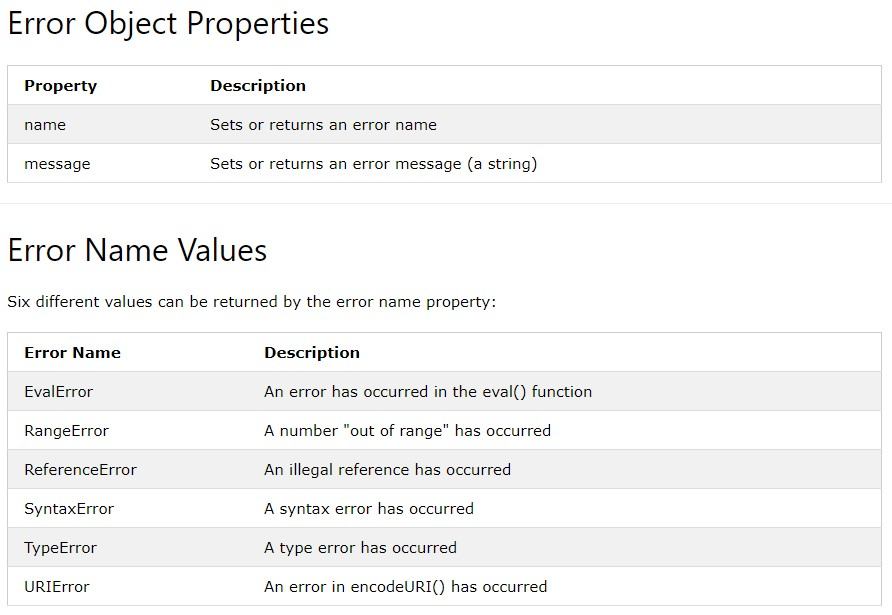
* Scope determines the accessibility (visibility) of variables.
In JavaScript there are two types of scope.
Local JavaScript Variables -> Variables declared within a JavaScript function, become LOCAL to the function. Local variables have Function scope: They can only be accessed from within the function.
Global JavaScript Variables -> A variable declared outside a function, becomes GLOBAL. A global variable has global scope: All scripts and functions on a web page can access it.
Automatically Global -> If you assign a value to a variable that has not been declared, it will automatically become a GLOBAL variable.
myFunction();
// code here can use carName
function myFunction() {
carName = "Volvo";
}
* All modern browsers support running JavaScript in "Strict Mode".
In "Strict Mode", undeclared variables are not automatically global.
* With JavaScript, the global scope is the complete JavaScript environment.
* In HTML, the global scope is the window object. All global variables belong to the window object.
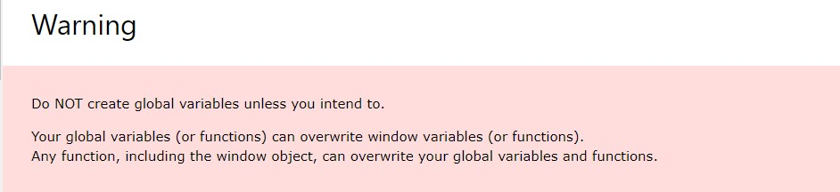
* The lifetime of a JavaScript variable starts when it is declared.
* Local variables are deleted when the function is completed.
* In a web browser, global variables are deleted when you close the browser window (or tab).
* Function arguments (parameters) work as local variables inside functions.
* In JavaScript, a variable can be declared after it has been used.
* Hoisting is JavaScript's default behavior of moving all declarations to the top of the current scope (to the top of the current script or the current function).
x = 5;
console.log(x);
var x;
* In other words; a variable can be used before it has been declared.
var x;
x = 5;
console.log(x);
* Variables and constants declared with let or const are not hoisted!
* JavaScript Initializations are Not Hoisted. JavaScript only hoists declarations, not initializations.
* Declare Your Variables At the Top..! Hoisting is (to many developers) an unknown or overlooked behavior of JavaScript.
* "use strict"; Defines that JavaScript code should be executed in "strict mode".
* Strict mode is declared by adding "use strict"; to the beginning of a script or a function. Declared at the beginning of a script, it has global scope (all code in the script will execute in strict mode).
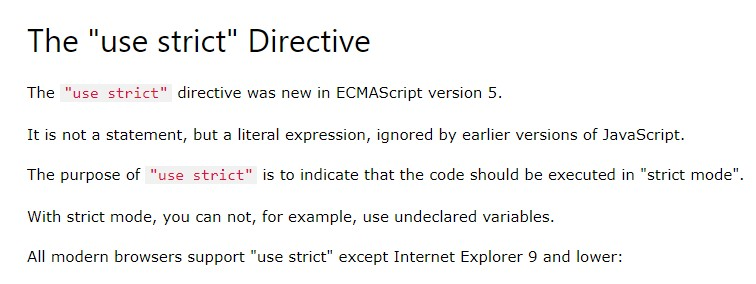
* Declared inside a function, it has local scope (only the code inside the function is in strict mode):
* You can use strict mode in all your programs. It helps you to write cleaner code, like preventing you from using undeclared variables.
* Strict mode makes it easier to write "secure" JavaScript.
* Strict mode changes previously accepted "bad syntax" into real errors.
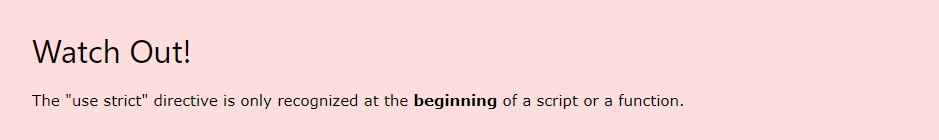
* As an example, in normal JavaScript, mistyping a variable name creates a new global variable. In strict mode, this will throw an error, making it impossible to accidentally create a global variable.
* In normal JavaScript, a developer will not receive any error feedback assigning values to non-writable properties.
* In strict mode, any assignment to a non-writable property, a getter-only property, a non-existing property, a non-existing variable, or a non-existing object, will throw an error.
* Using a variable, without declaring it, is not allowed.
* Using an object, without declaring it, is not allowed.
* Objects are variables too.
* Duplicating a parameter name is not allowed.
* Deleting a variable (or object) is not allowed.
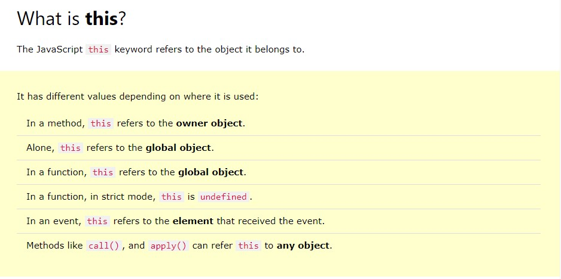
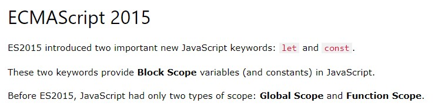
* JavaScript const variables must be assigned a value when they are declared.
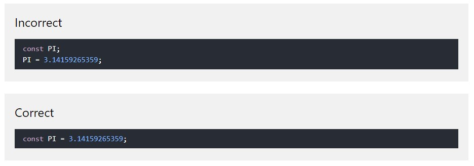
* Primitive Values -> If we assign a primitive value to a constant, we cannot change the primitive value.
* Constant Objects can Change -> You can change the properties of a constant object. But you can NOT reassign a constant object.
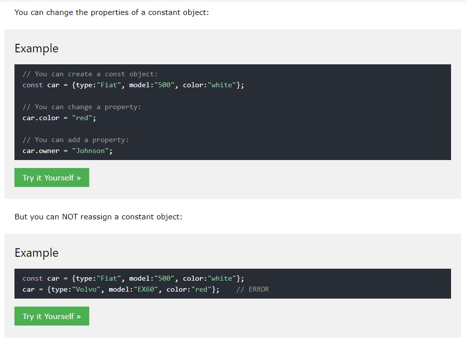
* Redeclaring or reassigning an existing var or let variable to const, in the same scope, or in the same block, is not allowed.
* Redeclaring or reassigning an existing const variable, in the same scope, or in the same block, is not allowed.
* Redeclaring a variable with const, in another scope, or in another block, is allowed.
* Variables defined with const are not hoisted to the top -> A const variable cannot be used before it is declared.
* Arrow functions were introduced in ES6.
* Arrow functions allow us to write shorter function syntax.
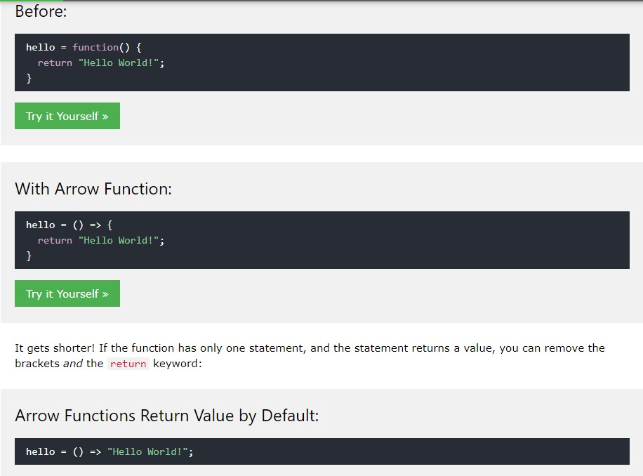
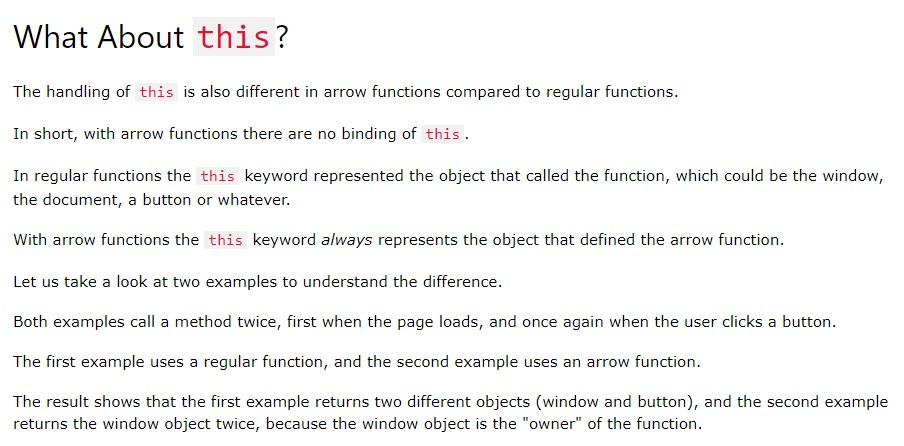
* ECMAScript 2015 -> ES6, also known as ECMAScript2015, introduced classes.
* A class is a type of function, but instead of using the keyword function to initiate it, we use the keyword class, and the properties are assigned inside a constructor() method.
* Use the keyword class to create a class, and always add the constructor() method. The constructor method is called each time the class object is initialized.
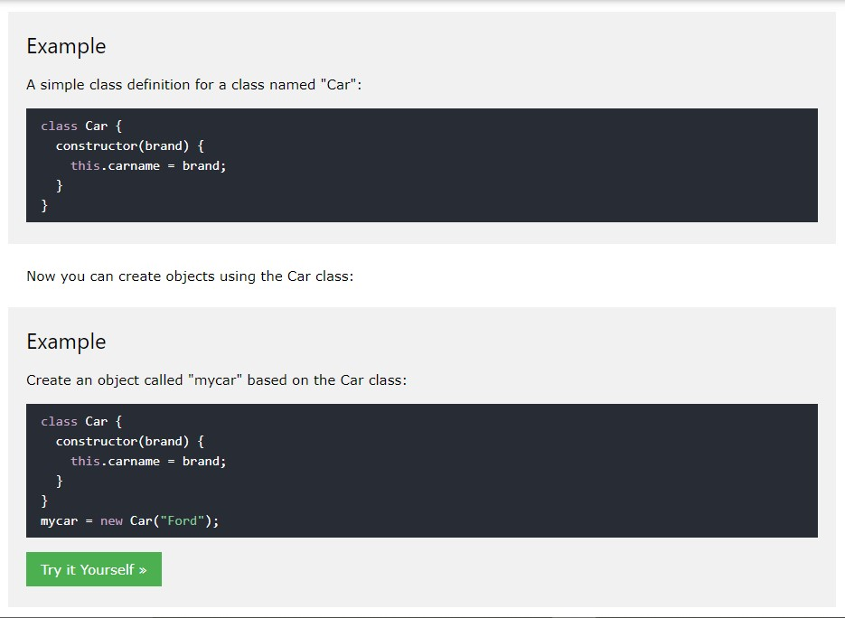
* Note: The constructor method is called automatically when the object is initialized.
* The constructor method is special, it is where you initialize properties, it is called automatically when a class is initiated, and it has to have the exact name "constructor", in fact, if you do not have a constructor method, JavaScript will add an invisible and empty constructor method.
class Car { //Class
constructor(brand) { // Construcctor
this.carname = brand; //property initialise
}
present() { // Method
return "I have a " + this.carname;
}
}
mycar = new Car("Ford"); //Class initialise
document.getElementById("demo").innerHTML = mycar.present();
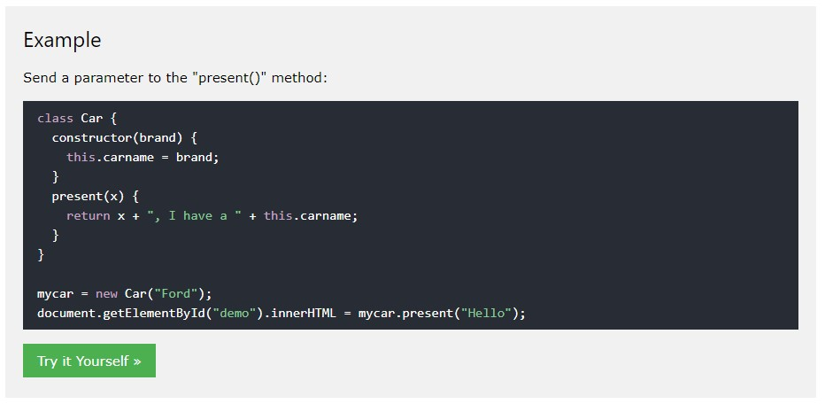
* Static methods are defined on the class itself, and not on the prototype -> That means you cannot call a static method on the object (mycar), but on the class (Car).
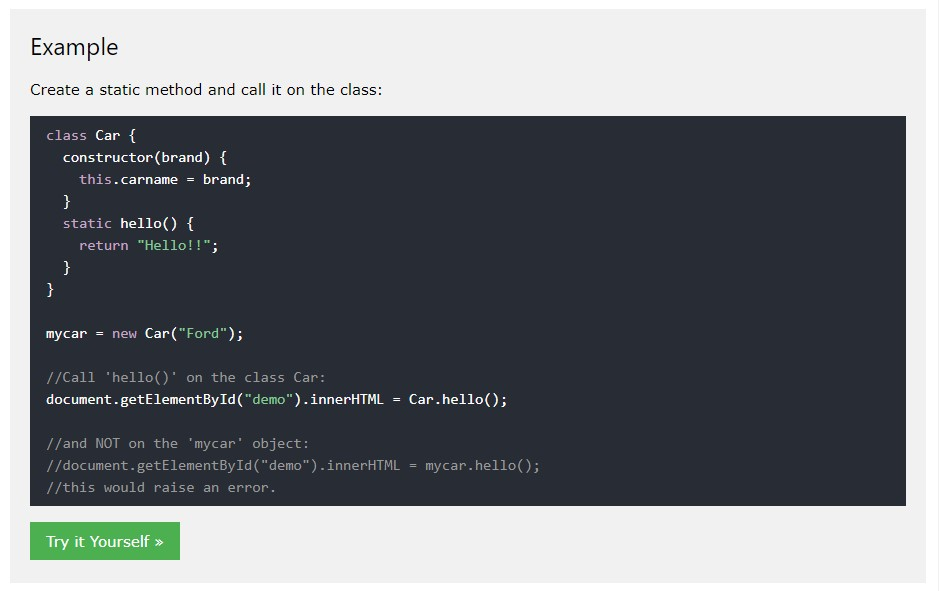
* To create a class inheritance, use the "extends" keyword.
* A class created with a class inheritance inherits all the methods from another class.
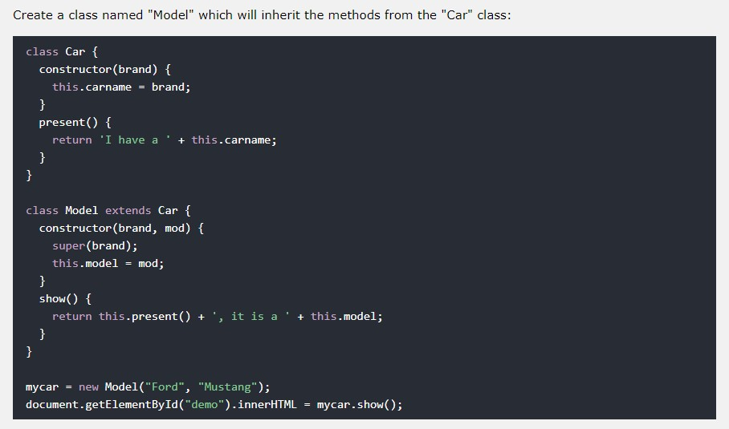
* The "super()" method refers to the parent class.
* By calling the "super()" method in the constructor method, we call the parent's constructor method and gets access to the parent's properties and methods.
* Inheritance is useful for code reusability: reuse properties and methods of an existing class when you create a new class.
* Classes also allows you to use getters and setters.
* It can be smart to use getters and setters for your properties, especially if you want to do something special with the value before returning them, or before you set them.
* To add getters and setters in the class, use the get and set keywords.
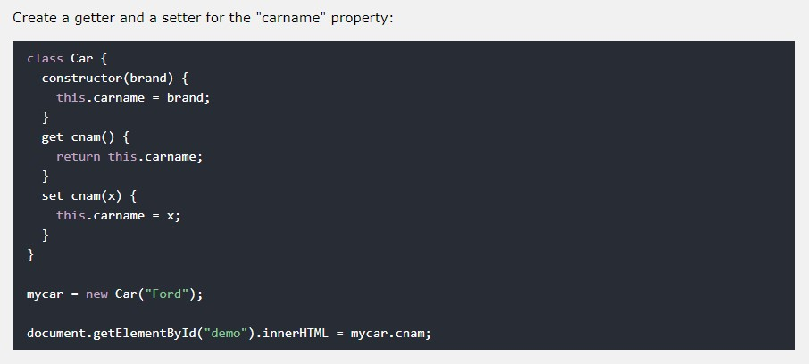
* Note: even if the getter is a method, you do not use parentheses when you want to get the property value.
* The name of the getter/setter method cannot be the same as the name of the property, in this case carname.
* Many programmers use an underscore character _ before the property name to separate the getter/setter from the actual property.
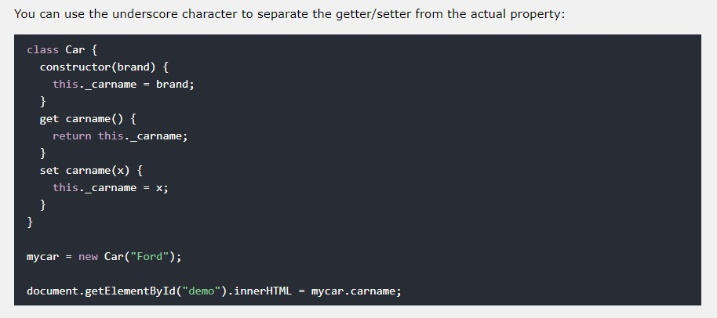
* Unlike functions, and other JavaScript declarations, class declarations are not hoisted -> That means that you must declare a class before you can use it.
* Note: For other declarations, like functions, you will NOT get an error when you try to use it before it is declared, because the default behavior of JavaScript declarations are hoisting (moving the declaration to the top).
* Searching for (and fixing) errors in programming code is called code debugging.
Debugging is the process of testing, finding, and reducing bugs (errors) in computer programs. The first known computer bug was a real bug (an insect) stuck in the electronics.
*Coding conventions are style guidelines for programming. They typically cover:
* Coding conventions secure quality:
* Coding conventions can be documented rules for teams to follow, or just be your individual coding practice.
* For readability, avoid lines longer than 80 characters.
* Avoid global variables, avoid new, avoid ==, avoid eval().
* JavaScript will close the return statement at the end of the line, because it is a complete statement.
* Never break a return statement.
* Use defer="true" in the script tag. The defer attribute specifies that the script should be executed after the page has finished parsing, but it only works for external scripts.
* HTML form validation can be done by JavaScript.
* Server side validation is performed by a web server, after input has been sent to the server.
* Client side validation is performed by a web browser, before input is sent to a web server.
* Constraint Validation HTML Input Attributes
* Constraint Validation CSS Pseudo Selectors
* Methods are actions that can be performed on objects. Object properties can be both primitive values, other objects, and functions.
* An object method is an object property containing a function definition.
* With JavaScript, you can define and create your own objects.
* There are different ways to create new objects:
* Any JavaScript object can be converted to an array using Object.values().
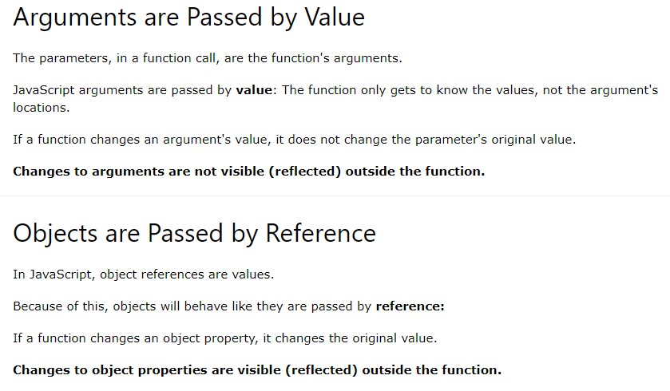
* You can find the largest number (in a list of numbers) using the Math.max() method:
Math.max(1,2,3); // Will return 3
* A closure is a function having access to the parent scope, even after the parent function has closed.